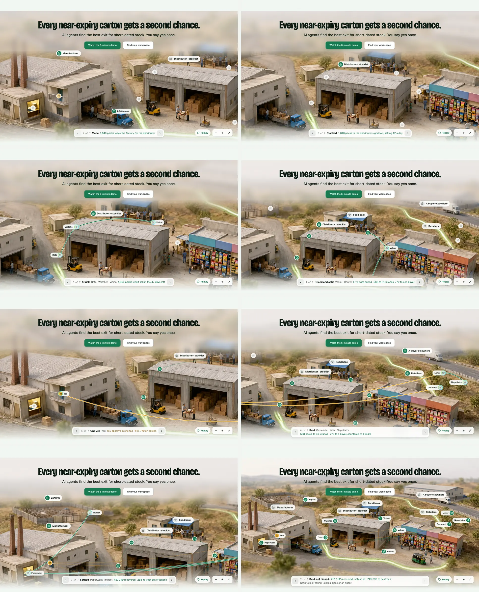
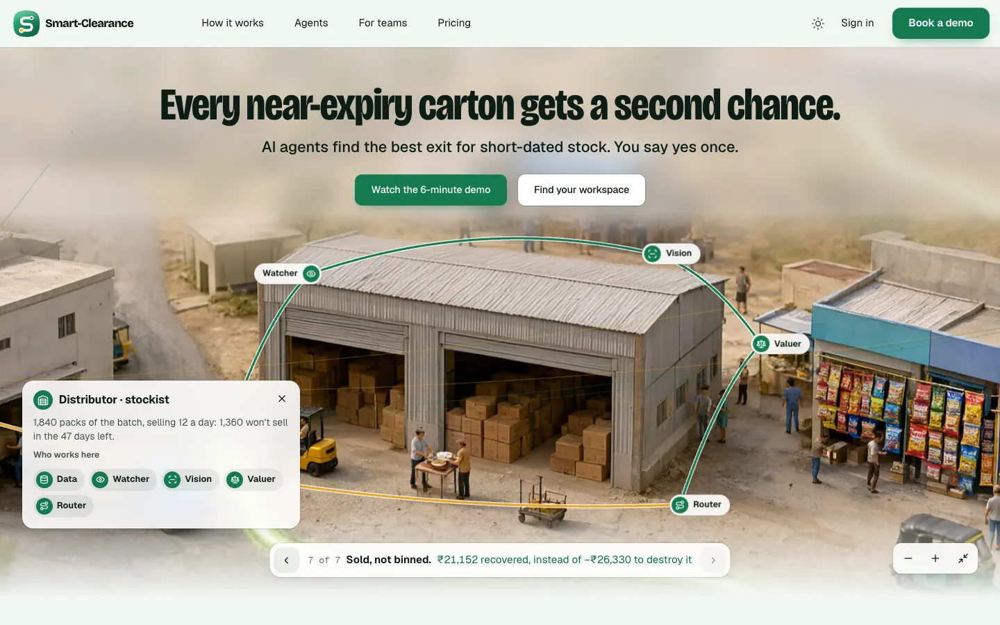
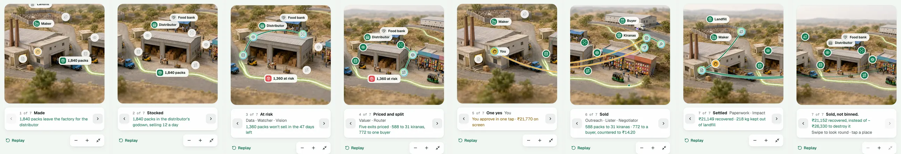
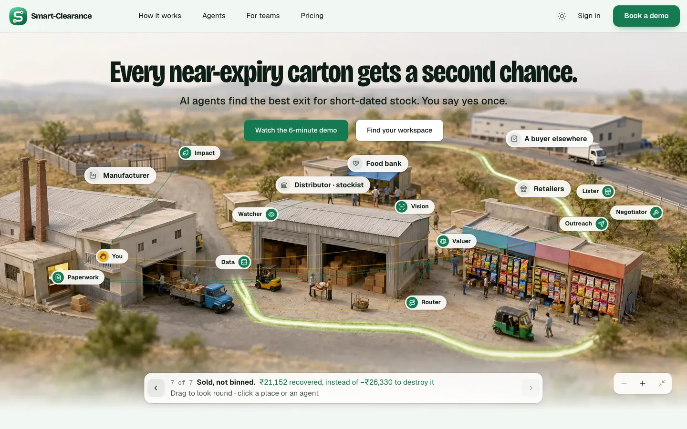
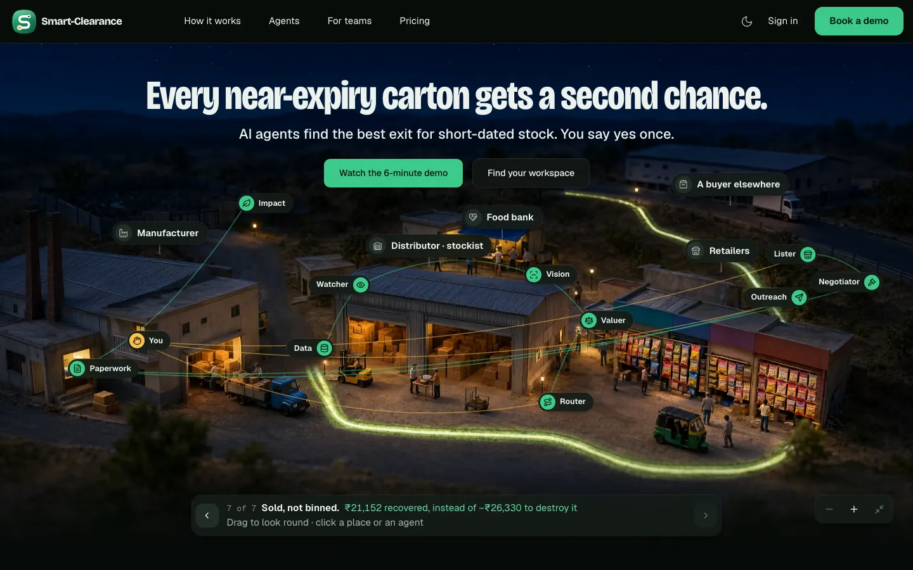
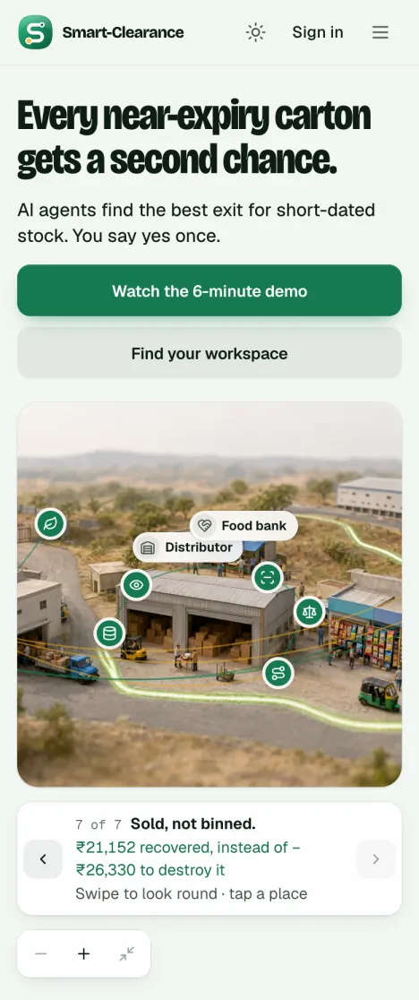
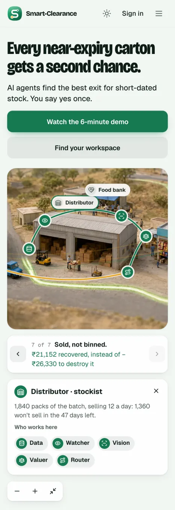

The tour plays, then the picture is the visitor's to drag, pinch and open
The camera follows the batch through the whole business, then hands the picture over:
- drag or swipe to look round, pinch or Ctrl-scroll to zoom;
- tap any place or agent for what happened there and what it did;
- "The whole business" takes the camera back out.
- Why it works
- The plainest way to give you all four asks: one picture of the business, every agent at its post, the tour, and a picture you can explore on any screen. It is light: an image and a few hundred lines of interface.
- Trade-off
- Its depth is the plate's own. Next to option 2 it can feel flat when the camera dives.
- The build would touch
design3/site: the hero's picture becomes a stage with a camera; the places, the agents' posts, the graph and the panel lie on it; the new plates go in;- the SvelteKit port, the same, with
motionfor the camera.
The tour, beat by beat (1440, light)


On a phone (390, light): the tour

At rest, and opened



